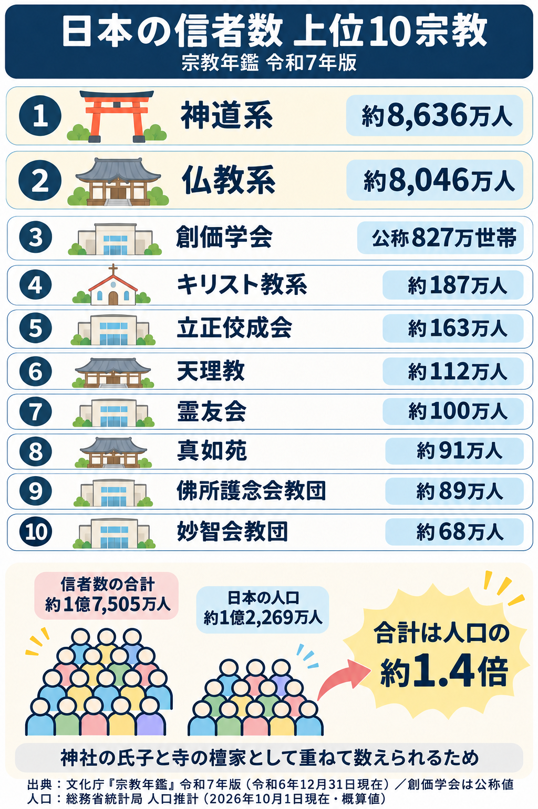

日本の信者数 上位10宗教（宗教年鑑 令和7年版）
文化庁『宗教年鑑』令和7年版（令和6年12月31日現在）にもとづく信者数の上位10宗教をまとめた図です。信者数を合計すると約1億7,505万人で、日本の人口（約1億2,269万人・2026年10月1日現在の概算値）の約1.4倍になります。その理由も図の下段で示しています。創価学会は宗教年鑑の統計表に載っていないため、公式に発表されている世帯数（公称）を示しています。

文化庁『宗教年鑑』令和7年版（令和6年12月31日現在）にもとづく信者数の上位10宗教をまとめた図です。信者数を合計すると約1億7,505万人で、日本の人口（約1億2,269万人・2026年10月1日現在の概算値）の約1.4倍になります。その理由も図の下段で示しています。創価学会は宗教年鑑の統計表に載っていないため、公式に発表されている世帯数（公称）を示しています。
